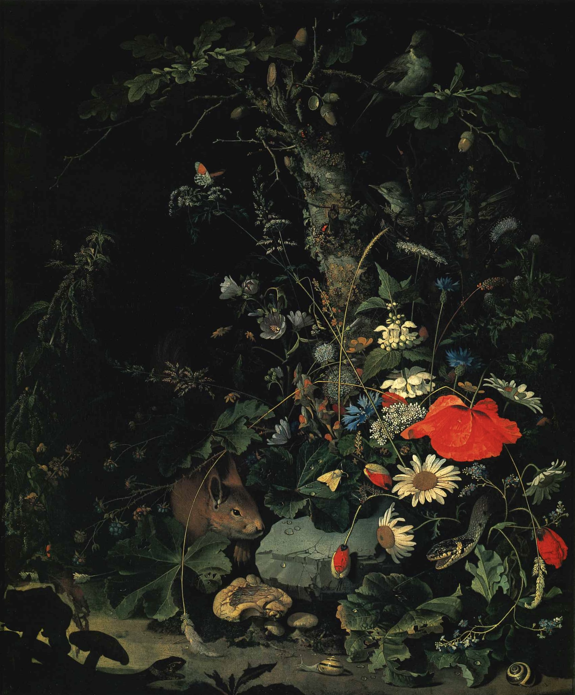

作品名 「洞窟の前のリスと草花」
花言葉
勿忘草「私を忘れないで」「誠の愛」「真実の愛」
ヒナゲシ「いたわり」「思いやり」「恋の予感」
「別れの悲しみ」「心の平静」「休息」
勿忘草、ひなげし
「私を忘れないで」
「春を知らせる花」とも言われる勿忘草。その花言葉は、ドイツに古くからある悲恋の物語が由来していると言われています。騎士ルドルフと、その恋人ベルタ。愛し合う二人がドナウ川のほとりで青い小さな花を見つけ、ベルタのために花を摘もうとしたルドルフが足を滑らせて川の急流に落ちてしまいます。ルドルフは溺れながらも、最後の力で青い花を岸部のベルタに投げ、「私を忘れないで」と告げた後、川の底に沈み、命を落としてしまいます。残されたベルタは、愛する人の最後の花と言葉を胸に一生を過ごしたというエピソードが由来だとされています。
洞窟の前のリスと草花
アブラハム・ミニョン
アブラハム・ミニョンは、ドイツの画家。ルイ14世やザクセン選帝侯の肖像画も残しているが、アブラハムが得意としたのは花や果物などの静物画や、鳥を題材とした絵だった。彼が描く花は繊細な筆使いと入念な仕上げが特徴である。また、中心に赤または白いバラを描き、暗色の背景に浮かび上がるように花卉を配置する構図を得意ともしている。ここにはどんぐりのなる木の下にヒナゲシ、勿忘草、ウスベニアオイなど20種類以上の植物が描かれている。
| 作品名 | 洞窟の前のリスと草花 |
| 作者 | アブラハム・ミニョン |
| 制作年 | 1844年〜1845年頃 |
| 種類 | 紙本木版多色刷り |
| 寸法 | 34.5×11.5cm |
| 所蔵 | ブリュッセル国立美術館 |